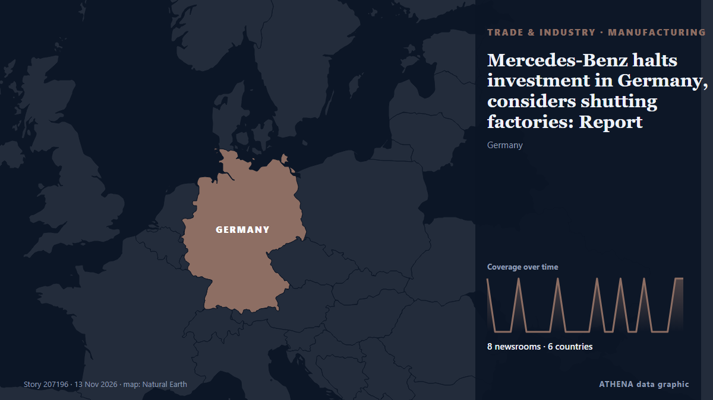

Manufacturing
SponsoredPresented by  Cybernetics and Artificial Intelligence Lab Welcome to the Cybernetics and Artificial Intelligence Laboratory, established at the Department of Business Administration of the National and Kapodistrian University of Athens. The lab is headed by Professor Dimitrios Thomakos. The lab aims to do research that can be published in top venues. Our research uses tools and methods of Artificial Intelligence, and lies in the following areas: - Forecasting - Decision making - Cyber security - Finance We are always looking forward to collaborating with exceptional students!
Cybernetics and Artificial Intelligence Lab Welcome to the Cybernetics and Artificial Intelligence Laboratory, established at the Department of Business Administration of the National and Kapodistrian University of Athens. The lab is headed by Professor Dimitrios Thomakos. The lab aims to do research that can be published in top venues. Our research uses tools and methods of Artificial Intelligence, and lies in the following areas: - Forecasting - Decision making - Cyber security - Finance We are always looking forward to collaborating with exceptional students!
| 1 Nov | 0 |
|---|---|
| 2 Nov | 0 |
| 3 Nov | 0 |
| 4 Nov | 0 |
| 5 Nov | 0 |
| 6 Nov | 0 |
| 7 Nov | 0 |
| 8 Nov | 0 |
| 9 Nov | 2 |
| 10 Nov | 2 |
| 11 Nov | 2 |
| 12 Nov | 3 |
| 13 Nov | 2 |
| 14 Nov | 0 |

Mercedes-Benz halts investment in Germany, considers shutting factories: Report
The announcement comes as the luxury German automaker faces increasing pressure from the works council and trade unions. from DW English
Ukrainian president arrives in Dublin ahead of major EU presidency event
European leaders are set to follow Volodymyr Zelensky’s arrival in the Irish capital this week. from Evening Standard (London)
Austal Cuts First Steel on Landing Craft Heavy for Australian Army
The Australian government announced on 11 November 2026 that construction is now underway on the second of two amphibious landing craft-procurements for the Australian Army. from Naval News
Port of Brunswick Expands Auto Shipping Capacity as Georgia Manufacturing Booms
The Georgia Ports Authority is expanding automotive shipping capacity at the Port of Brunswick as a growing number of global automakers establish manufacturing operations across the state… from gCaptain
Toyota to bring mini trucks to US market
The automaker will invest $34 million into the initiative and add 50 jobs. from The Independent
Honda to invest $3B in new Ohio hybrid vehicle plant
The factory will create 2,000 jobs, and as part of Honda’s focus on hybrids and swift development, it’s keeping close to the automaker’s existing U.S. footprint. from Manufacturing Dive